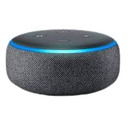
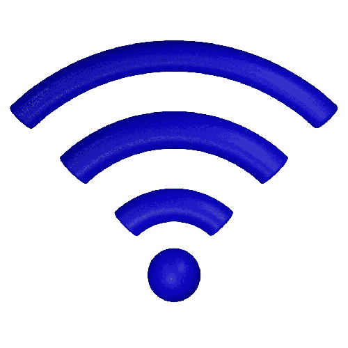

Controle Universal
Informações do Video
Controle Universal Positivo
O controle universal i2go e instalado próximo ao dispositivo que você quer que ele se comunique,
1° ligue o aparelho em uma tomada ou entrada usb em seguida baixe o app i2go home e faça o cadastro.
Após isso ele ira se conectar a sua rede wireless automaticamente e ira identificar sua smart Tv ou
Dispositivo que deseja conectar ao mesmo.
Ferramentas para Instalação
Amazon Alexa
Àcesso a internet 2G

Baixe o App Smart Life